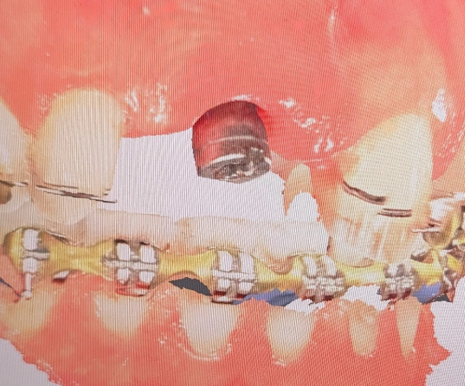

🟦 Insight 38 — تعیین مرجع ثابت در کیسهای ترکیبی ایمپلنت + ارتودنسی: حل معادله با حذف درجات آزادی

📝 توضیح بالینی
ایجاد مرجع پایدار در حضور ایمپلنت؛ شروع از جزء غیرقابل حرکت
-
در کیسهایی که همزمان ایمپلنت و ارتودنسی درگیر هستند، یکی از چالشهای اصلی، تعدد مجهولات و نبود یک مرجع مشخص برای تصمیمگیری است. اگر ترتیب حل مشخص نباشد، درمان وارد چرخهای از اصلاحات ناپایدار میشود.
-
در این بیمار، دندان سانترال با ایمپلنت جایگزین شده و ابعاد دندانهای قدامی کوچکتر از نرمال هستند. در نتیجه، متخصص ارتودنسی مرجع مشخصی برای تنظیم فضاها در اختیار ندارد.
-
نقطه کلیدی اینجاست: ایمپلنت تنها جزء غیرقابل حرکت در این معادله است و باید بهعنوان مرجع درمان انتخاب شود.
-
بر همین اساس، با استفاده از اسکن دیجیتال، برای ایمپلنت یک روکش موقت PMMA با ابعاد نرمال یک سانترال طراحی شد؛ نه صرفاً بهعنوان جایگزین، بلکه بهعنوان یک راهنمای سهبعدی در قوس.
-
در طراحی این مرجع دو اصل رعایت شد:
-
۱. قرارگیری صحیح در فرم قوس (Arch Form)
-
۲. تطابق دقیق میدلاین پروتزی با میدلاین واقعی بیمار — چون ایمپلنت قابلیت جابهجایی ندارد، هر خطا در این مرحله به کل درمان منتقل میشود.
-
پس از تثبیت این مرجع، بیمار به متخصص ترمیمی ارجاع داده شد تا با ونیر کامپوزیت، صرفاً ابعاد دندانها نرمال شود، بدون بستن فضاها. این کار باعث میشود ارتودنسی فضاها را بر اساس ابعاد واقعی تنظیم کند، نه حدس.
-
در صورت نیاز، روکش PMMA بهعنوان یک ساختار قابل اصلاح میتواند توسط ترمیمی تراش داده شود یا با کامپوزیت اصلاح گردد، بدون از دست رفتن نقش مرجع.
-
منطق حل این کیس بهصورت مرحلهای بود:
ابتدا حذف درجه آزادی ایمپلنت ← سپس تعریف ابعاد دندانی ← و در نهایت تنظیم فضاها توسط ارتودنسی بر اساس دادههای قطعی
-
نکته کلیدی:
در درمانهای بینرشتهای، اگر یک جزء غیرقابل تغییر وجود دارد، باید به مرجع تبدیل شود. تعریف زودهنگام این مرجع، درمان را از حالت حدسی خارج کرده و به یک مسیر قابل پیشبینی هدایت میکند.
✍️ دکتر فواد شهابیان
متخصص پروتزهای دندانی و ایمپلنت